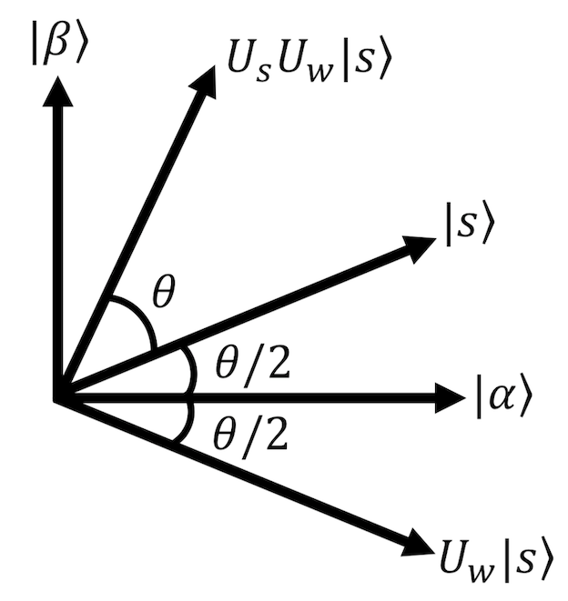

8-2. Grover’s algorithm¶
Grover’s algorithm is a quantum algorithm for searching for specific data from an unsorted database [1]. Grover’s algorithm can find a solution in \(O(\sqrt{N})\) queries (calling an oracle) for \(N\) unsorted data. Since \(O(N)\) queries are required for a classical computer, a quadratic acceleration is achieved by using a quantum algorithm.
Once the oracle is constructed, Grover’s algorithm can accelerate the entire search portion of any classical algorithm. For example
Satisfiability problem (SAT problem)
The problem of finding the original value from a particular hash value
and the latter has actually been proposed in a paper as a Bitcoin mining acceleration [2].
In this section, we first provide a theoretical explanation of Glover’s algorithm and then present an example implementation using Qulacs.
Algorithm Flow¶
The flow of Grover’s algorithm is simple and is as follows. As in the previous section, consider the problem of searching for \(M\) solutions from a database of \(N\) elements, where the element labels are \(N\) digit bit sequences \(x = x_1 \ldots x_n\).
prepare a superposition of all states \(|s\rangle = \frac{1}{\sqrt{N}}\sum_x |x\rangle\).
apply oracle \(U_w\) (reversal operation on the solution)
apply the inversion operation \(U_s\) with \(|s\rangle\) as the axis of symmetry
Repeat steps 2 and 3 \(k\) times
perform the measurement
Let’s look at each step in detail.
1. prepare a superposition state of all states \(|s\rangle = \frac{1}{\sqrt{N}}\sum_x |x\rangle\).¶
This is easy. For the initial state \(|0\cdots0\rangle\), we can apply Hadamard gate \(H\) to all qubits.
2. Apply the oracle \(U_w\) (reversal operation on the solution)¶
Next, we let the oracle act on the state \(|s\rangle\). Here, as an oracle, we will consider the operation “if \(x\) is a solution to the input \(|x\rangle\), the phase is inverted by multiplying by (-1), and if it is not a solution, nothing is done” as described at the end of previous section, and the auxiliary bits are omitted. In other words, define the oracle \(U_w\) as follows.
The oracle \(U_w\) is called an “inversion operation on the solution” because it inverts the phase only when the input is a solution.
3. Applying the inversion operation \(U_s\) with \(|s\rangle\) as the axis of symmetry¶
In step 2, we considered the inversion operation on the solution, and in step 3, we will apply the inversion operation \(U_s\) with the superposition of all states \(|s\rangle\) as the axis of symmetry.
This operator acts on input state \(|\psi\rangle = a|s\rangle + b|s_\perp\rangle\) (\(|s_\perp\rangle\) is a vector orthogonal to \(|s\rangle\))as follows
and inverts only the phase of the part proportional to \(|s_\perp\rangle\).
4. Repeat steps 2 and 3 \(k\) times¶
Repeat the above two inversion operations \(U_w\) and \(U_s\). As we will see later, approximately \(O(\sqrt{N/M})\) iterations are sufficient to obtain a solution with high enough probability for the next step 5 measurement. In other words, the number of times to call the oracle is \(O(\sqrt{N})\).
5. Take a measurement¶
After the steps up to this point, the state is \((U_s U_w)^k | s \rangle\). \(k\) is the number of iterations of steps 2 and 3. As described below, in fact, (absolute value of) the coefficient of the state \(|w\rangle\) corresponding to the solution \(w\) is very large in this state, so if we perform the measurement in the computational basis, we can obtain the solution \(w\) (bit string) with a high probability.
Roughly speaking, this is the only operation to be performed in Grover’s algorithm, and it is very simple.
Geometric Explanation¶
Next, we provide a geometric explanation of why Grover’s algorithm works. (There are other explanations that focus on the average operation of the coefficients, see for example [3].)
Definition of a two-dimensional plane¶
First, consider a two-dimensional plane stretched in the following two states \(|\alpha\rangle,|\beta\rangle\).
The superposition state \(|s\rangle\) of all states can be expressed as follows, which shows that it is a vector in this 2-dimensional plane.
In particular, using angles which satisfies \(\cos{\frac{\theta}{2}} = \sqrt{\frac{N-M}{N}}, \sin{\frac{\theta}{2}} = \sqrt{\frac{M}{N}}\) we can write
This is illustrated in the following figure. (Note that since \(N \gg{} M\) in general in search problems, \(\sqrt{M/N}\) is close to 0 and \(\theta\) is often a positive number close to 0.)
Two inversion operations \(U_s U_w\) = rotation in a two-dimensional plane¶
Considering in this plane, the oracle \(U_w\) is an inversion operation with respect to the \(|\beta\rangle\) axis (\(U_w|\alpha\rangle =|\alpha\rangle, U_w|\beta\rangle = -|\beta\rangle\)). Therefore, after applying \(U_w\), applying inversion \(U_s\) with \(|s\rangle\) as the symmetry axis will result in a rotation in the \(|\alpha\rangle,|\beta\rangle\) plane by an angle \(\theta\). (see the figure).
Since Grover’s algorithm repeats \(U_s U_w\) \(k\) times, the state is rotated \(k\) times, and just before the measurement
When \(N \gg M\) , \(\theta\) was a positive number close to zero, so each time \(|s\rangle\) was acted on by \(U_s U_w\), the coefficient of \(|\alpha\rangle\) would decrease and that of \(|\beta\rangle\) would increase. Since \(|\beta\rangle\) was made up of a superposition of all solution states, this means that the probability of obtaining a solution increases when \((U_s U_w)^k |s\rangle\) is measured.
This is the reasons why Glover’s algorithm can successfully search for solutions.
Estimating the optimal \(k\).¶
Finally, let’s evaluate how much \(k\), the number of times to act on \(U_s U_w\), i.e., how many times to call the oracle. This will determine the computational complexity.
The closest \((U_s U_w)^k |s\rangle\) comes to \(|\beta\rangle\) is when \(\frac{(2k+1)\theta}{2}\) is close to \(\frac{\pi}{2}\), that is when \(k\) is
ここで \(\text{ClosestInteger}(\ldots)\) は \(\ldots\) に最も近い整数を表す。 \(R\)の上限を評価しよう。 \(\theta > 0\) について成り立つ式
where \(\text{ClosestInteger}(\ldots)\) denotes the integer closest to \(\ldots\). Let us evaluate the upper bound of \(R\).
With the above equation that hold for \(\theta > 0\), we get
That is, \(R\) is at most \(O(\sqrt{N/M})\) and Grover’s algorithm works with \(O(\sqrt{N})\).
Example Implementation¶
Let us try to implement Grover’s algorithm using Qulacs. (The implementation code is almost the same as in [4].
[1]:
## Importing libraries
import matplotlib.pyplot as plt
import numpy as np
import time
import random
from qulacs import QuantumState
from qulacs.state import inner_product
from qulacs import QuantumCircuit
from qulacs.gate import to_matrix_gate
from qulacs import QuantumState
from qulacs.gate import Identity, X,Y,Z #Pauli operator
from qulacs.gate import H
from qulacs.gate import RX,RY,RZ #Rotation operations on Pauli operators
## Run only if you are in a Google Colaboratory / (Linux or Mac) jupyter notebook environment.
## Qulacs errors will be output normally.
!pip3 install wurlitzer
%load_ext wurlitzer
[2]:
## Function to plot the distribution of absolute values of coefficients
def show_distribution(state,nqubits):
plt.bar([i for i in range(pow(2,nqubits))], abs(state.get_vector()))
plt.show()
Checking the operation¶
First, let’s implement Grover’s algorithm with 5 qubits and check its operation. The superposition state of all states \(|s\rangle\) can be created by acting on all bits of the state \(|0\cdots0\rangle\) with Hadamard gate.
[3]:
nqubits = 5
state = QuantumState(nqubits)
state.set_zero_state()
def make_Hadamard(nqubits):
Hadamard = QuantumCircuit(nqubits)
for i in range(nqubits):
Hadamard.add_gate(H(i))
return Hadamard
Hadamard = make_Hadamard(nqubits)
Hadamard.update_quantum_state(state)
show_distribution(state,nqubits)
Next, we create the oracle \(U_w\). Here we set \(|1\ldots1\rangle\) as the solution, and create an operator that adds a phase (-1) to only \(|1\ldots1\rangle\). Such an operator can be implemented as “an operator that apply the \(Z\) gate on the nqubitsth qubit when all qubits from the 0th to the nqubits-1th are 1. The implementation uses Qulacs special gate to_matrix_gate. Also, we use control_index and control_with_value.
[4]:
def make_U_w(nqubits):
U_w = QuantumCircuit(nqubits)
CnZ = to_matrix_gate(Z(nqubits-1))
# apply gate only if i-th qubits are all 1's
for i in range(nqubits-1):
control_index = i
control_with_value = 1
CnZ.add_control_qubit(control_index, control_with_value)
U_w.add_gate(CnZ)
return U_w
Checking the action of the oracle, we can see that indeed only the last component (\(|1\cdots1\rangle\)) is inverted in phase.
[5]:
hoge = state.copy()
U_w = make_U_w(nqubits)
U_w.update_quantum_state(hoge)
print(hoge.get_vector())
[ 0.1767767+0.j 0.1767767+0.j 0.1767767+0.j 0.1767767+0.j
0.1767767+0.j 0.1767767+0.j 0.1767767+0.j 0.1767767+0.j
0.1767767+0.j 0.1767767+0.j 0.1767767+0.j 0.1767767+0.j
0.1767767+0.j 0.1767767+0.j 0.1767767+0.j 0.1767767+0.j
0.1767767+0.j 0.1767767+0.j 0.1767767+0.j 0.1767767+0.j
0.1767767+0.j 0.1767767+0.j 0.1767767+0.j 0.1767767+0.j
0.1767767+0.j 0.1767767+0.j 0.1767767+0.j 0.1767767+0.j
0.1767767+0.j 0.1767767+0.j 0.1767767+0.j -0.1767767+0.j]
Similarly, create an inversion \(U_s\) with \(|s\rangle\) as the symmetry axis. Use the following equation holds.
[6]:
def make_U_s(nqubits):
U_s = QuantumCircuit(nqubits)
for i in range(nqubits):
U_s.add_gate(H(i))
## 2|0><0| - I implementation
## First, phase (-1) is given to all states. The gate matrix is arrary([[-1,0],[0,-1]])
U_s.add_gate(to_matrix_gate(RZ(nqubits-1, 2*np.pi)))
U_s.add_gate( X(nqubits-1) )
## apply the Z-gate only if all i-th qubits are 0
CnZ = to_matrix_gate(Z(nqubits-1))
for i in range(nqubits-1):
control_index = i
control_with_value = 0
CnZ.add_control_qubit(control_index, control_with_value)
U_s.add_gate( CnZ )
U_s.add_gate( X(nqubits-1) )
for i in range(nqubits):
U_s.add_gate(H(i))
return U_s
Now let’s apply \(U_s U_w\) just once and see how the probability distribution changes. The probability of all 1 states (the rightmost one) gets slightly larger.
[7]:
## Prepare initial state
state = QuantumState(nqubits)
state.set_zero_state()
Hadamard.update_quantum_state(state)
## apply U_s U_w
U_s = make_U_s(nqubits)
U_w.update_quantum_state(state)
U_s.update_quantum_state(state)
show_distribution(state,nqubits)
Repeat this a few times and you’ll see.
[8]:
## Create a solution state |1....1> to evaluate the inner product.
target_state = QuantumState(nqubits)
target_state.set_computational_basis(2**nqubits-1) ## 2**n_qubits-1 is a binary number 1.... .1
## Run Grover's algorithm
state = QuantumState(nqubits)
state.set_zero_state()
Hadamard.update_quantum_state(state)
for i in range(4):
U_w.update_quantum_state(state)
U_s.update_quantum_state(state)
show_distribution(state,nqubits)
print(np.linalg.norm(inner_product(state, target_state)))
0.5082329989778305
0.7761601777867947
0.9470673343724091
0.9995910741614723
After about \(k=4\) iterations, we got a solution state with probability almost 1. Let nqubits be a bit larger and check the behavior of the solution output probability for \(k\).
[9]:
nqubits = 10
state = QuantumState(nqubits)
state.set_zero_state()
## Create a solution state |1....1> to evaluate the inner product.
target_state = QuantumState(nqubits)
target_state.set_computational_basis(2**nqubits-1) ## 2**n_qubits-1 is binary number 1...1
## Run Grover's algorithm
Hadamard = make_Hadamard(nqubits)
U_w= make_U_w(nqubits)
U_s = make_U_s(nqubits)
result = []
state = QuantumState(nqubits)
state.set_zero_state()
Hadamard.update_quantum_state(state)
for k in range(30):
U_w.update_quantum_state(state)
U_s.update_quantum_state(state)
#show_distribution(state,nqubits)
result.append(np.linalg.norm(inner_product(state, target_state)))
max_k = np.argmax(result)
print( f"maximal probability {result[max_k]:5e} is obtained at k = {max_k+1}")
plt.plot(np.arange(1, 30+1), result, "o-")
maximal probability 9.997306e-01 is obtained at k = 25
[9]:
[<matplotlib.lines.Line2D at 0x11d3ee990>]
The target state is obtained with probability 1 almost \(k=25\) times. Also, the \(k\) dependence of the probability is a sine function, as we saw in the “Geometric Explanation” section.
Finally, let’s see how the \(k\) needed to find the solution behaves with respect to the number of qubits.
[10]:
result = []
min_nqubits = 6
max_nqubits = 16
for nqubits in range(min_nqubits, max_nqubits+1, 2):
## Prepare circuit
Hadamard = make_Hadamard(nqubits)
U_w= make_U_w(nqubits)
U_s = make_U_s(nqubits)
## Create a solution state |1....1> to evaluate the inner product.
target_state = QuantumState(nqubits)
target_state.set_computational_basis(2**nqubits-1) ## 2**n_qubits-1 is binary number 1...1
state = QuantumState(nqubits)
state.set_zero_state()
Hadamard.update_quantum_state(state)
## Multiply U_s U_w until the probability starts to decrease
tmp = 0
flag = 0
num_iter = 0
while flag == 0 and num_iter <= 1000:
num_iter += 1
U_w.update_quantum_state(state)
U_s.update_quantum_state(state)
suc_prob = np.linalg.norm(inner_product(state, target_state))
if tmp < suc_prob:
tmp = suc_prob
else:
flag = 1
result.append( [nqubits, num_iter, suc_prob] )
print(f"nqubits={nqubits}, num_iter={num_iter}, suc_prob={suc_prob:5e}")
nqubits=6, num_iter=7, suc_prob=9.526013e-01
nqubits=8, num_iter=13, suc_prob=9.930691e-01
nqubits=10, num_iter=26, suc_prob=9.963280e-01
nqubits=12, num_iter=51, suc_prob=9.992534e-01
nqubits=14, num_iter=101, suc_prob=9.998851e-01
nqubits=16, num_iter=202, suc_prob=9.999368e-01
[11]:
result_array = np.array(result)
plt.xlim(min_nqubits-1, max_nqubits+1)
plt.xlabel("n, # of qubits", fontsize=15)
plt.ylabel("k, # of iteration", fontsize=15)
plt.semilogy(result_array[:,0], result_array[:,1], "o-", label="experiment")
plt.semilogy(result_array[:,0], 0.05*2**result_array[:,0], "-", label=r"$\propto N=2^n$")
plt.semilogy(result_array[:,0], 2**(0.5*result_array[:,0]), "-", label=r"$\propto \sqrt{N}=2^{n/2}$")
plt.legend(fontsize=10)
[11]:
<matplotlib.legend.Legend at 0x11a5fd410>
The number of iterations = the number of oracle calls \(k\) is proportional to \(O(\sqrt{N})\), not \(O(N)\).
Appendix¶
Interested readers are encouraged to use Grover’s algorithm to solve the convenience store placement problem IBM Quantum Challenge 2019 contest problem. An example solution has also been uploaded.
Reference¶
6.1 The quantum search algorithm of “Quantum Computation and Quantum Information 10th Anniversary Edition“, University Printing House